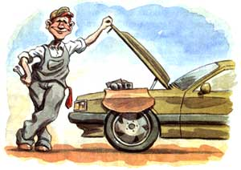

Mother's Mechanic
Trade secrets from a master mechanic.
Let me get something off my chest before we get down to business. I'm not a "journalist." I'm a "wrench turner," and have been for the better part of 35 years. What gets me up in the morning after all that time, what has kept me clinking away in this field since Kennedy was president, is simply that the same things that mystify you about your cars mystify me. They are at once impossibly complex and mule-like simple, increasingly dependable, yet technologically incomprehensible to a seasoned NASA flight engineer. They're a source of our greatest joy, and most teeth-clenching rage. But we love them and need to care just as much for those solid blocks of whirring computer relays as we did for the simple straight sixes of a generation ago. So what can the novice owner do, beyond changing the oil and airing the tires, to extend the life of a car ? Volumes, my friends, volumes!
I was recently told that after only three years, the air-conditioning unit needed to be basically replaced on my 1993 Ford F-100. The mechanic told me the internal seals were gone. Is he full of baloney or do I need an overhauled A/C?
Dale Hartsman
Kansas City, MO
Your mechanic is probably right, but I'm still angry when I see letters like this because the whole problem could have been avoided. The single most important thing about all air conditioners is to use them every day. It takes less than two minutes of daily operation to wet the internal seals in an A/C pump, but this kind of information isn't exactly forthcoming from dealers or mechanics; in fact there was a time when I might have been fired for relating that information, because the garage would have lost out on the lovely "gravy job" that was going to come rolling in about a year later. It would take less time for a salesman to tell the simple truth than it takes to turn on the A/C for a minute. All most of us have to do is turn on the A/C for a few minutes every day to dramatically extend the life of A/C units that are not only hideously expensive to repair, but also worth at least $600 at trade-in time.
My dad used to swear by the addition of a little "lube" to his antifreeze, but I never hear anyone using it anymore. What's it for and has it been replaced by something else?
Chris Medford
Dalhart, TX
There was a time when you bought antifreeze to service a customer's cooling system and you knew that in the bottom of each gallon was a precious amount of water pump lube, actually water-soluble oil. Over the years, something seems to have happened to this small amount of liquid. So unless the technician servicing your car adds extra water pump lube-or unless you do-guess who will need a water pump replacement much sooner than necessary? This should be a part of yearly service. Your dad is absolutely right, and the lube is available at the nearest auto parts store. Just ask for a can of water pump lube, and the next time the car sits overnight with a cold engine, carefully remove the radiator cap and top it off with the lube. If any is left over, just add it to the overflow tank. If you get a can with a twist-off cap, save what is left and add it later. The result may be one loss weekend ruined by a water pump.
Which brings up that age-old "saw," the almighty "regular maintenance:" I simply lose count of the otherwise intelligent people who ignore maintenance schedules, then fume in frustration when trade-in time leaves them with a car worth half of what it should. So here goes!
While I'm still thinking about that water pump, let's just cover one more very much neglected service point. The recommendations of car makers on belts and hoses is so simple. Just replace them all every four years. Period. Even if you never turned a wrench bigger than a fingernail file, you can spot a bad belt under the hood. Just watch for any frayed edges or cracked spots. Having a belt fall off in traffic is a nutty way to ruin a day. Get them replaced before they drive you nuts.
The same goes for air filters. Every few months, wrestle your filter out of your car and hold it up to the sun or the trouble light built in under the hood. If you see lots of light through the filter, it's fine. Now just put it back. More than one seasoned professional has sandblasted the valves in an engine by leaving the air filter lying on the shop floor. I change both air AND oil filters every season regardless of mileage on my cars, and just before any long trips. An average driver with less than 12,000 miles on the road a year will do fine with a seasonal change, however. One determining factor is where you drive. Big cities eat air and oil filters for breakfast.
Before you dive under a car to change oil, remember one thing. One of the dumbest things anyone can do is to work under a car cranked up with a bumper jack. Those things will KILL you! If you must work under a car in an emergency situation, set the emergency brake, then choke or block the two wheels on the side of the car opposite the side you are working on.
It sounds like a ridiculous question, but no one has been able to give me a reasonable explanation, so here goes: Every time I have to change a tire, the lug nuts on my pickup truck are so tight that I can barely budge them, regardless of how they were put on. How does this happen?
Kelly Dalamgia
Aurora, IL
I'm going to guess that you don't put them on yourself but have the tire shop do it when you change from summer to winter radials. Most of the time, the shops where tires are mounted use a "clicker" type torque wrench. My youngest son, also a mechanic, told me once that his boss only replaced his clicker when it fell apart, not when it needed recalibration (which is every 90 days to be accurate). If a mechanic is experienced, he can get a lug nut right by feel. Most of the overtorque jobs are done by someone who works for a boss who wants the business of replacing the distorted rotors on your car, next time that is!
Whatever you do, don't request that a tire man leave the lug nuts on your vehicle loose, however. Just get yourself a breakerbar and a deep well socket to fit your nuts and save yourself an inconvenience.
When I bought my used car, which was only five years old, it had no catalytic converter on it. Is it legal to remove them?
David Keith
Cumberland, RI
You're not going to like this, David. The catalytic converter, that "miracle" of modern car design, which I happen to abhor, is now required by law in my home state of Pennsylvania. This means we cannot sell a car legally without outfitting the car with one.
As if that weren't enough, under federal law it is unlawful to alter anything in the emission control system, and a -technician can be fined $12,000 per offense. Not an inviting answer to your question when you'll need a new inspection sticker.
Answering customers' questions is often a challenge and sometimes a pain, but occasionally we get people who become the stuff of shop folklore. One day a young woman walked up to me while I was under a hood and simply asked, "Can you fix my car, please?"
The request was followed by a tail of woe. Her ex had pulled all the wires off the distributor cap, etc., on her new Fiat. Would I please see what I could do to repair it? An hour and a half later it ran out the door in one piece. Before she left I said, "If he decides to beat up your car again, we may have to take more drastic action." I thought I was kidding.
Well, about six weeks later it was back. He had done it again. This time the whole wiring harness under the hood was ruined. It wasn't that much fun to fix, and I was getting cranky about it. I ordered a used one from a local yard and the bill paid by her insurance was in excess of three hundred dollars.
When she picked it up she wanted to know what action I suggested. I walked to the back wall and picked up a half box of Bonami Cleanser. I handed it to her and said, "Now just do as I say and nothing else. Go find his pickup truck and set this on the hood ...then walk away." Confused but willing, she motored out of the lot.
I happened to know that this guy knew his way around a car, and I also knew the expression of stark raving terror that would be on his face when he saw that calling card on his hood. If someone had actually put that cleanser down the throat of his carburetor, as is the habit of mechanics who seek the ultimate in revenge, it would have wiped out his entire engine.
Another six weeks went by and suddenly the woman appeared with a perfect lemon meringue pie for us at lunchtime. Her ex had the message down pat.
Thus endeth the lesson.
If your car or truck is getting you down and you need some practical answers fast, write Jon at Mother's Mechanic, c/o Mother Earth News, P.O. Box 129, Arden, NC, or via E-mail at MEarthNews@aol.com. Don't forget to send a photo.
|
 Jon Gail Blair |
|
|